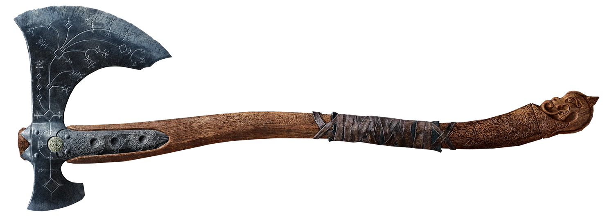

In God of War, players control Kratos, a Spartan warrior who is sent by the Greek gods to kill Ares, the god of war. As the story progresses, Kratos is revealed to be Ares' former servant, who had been tricked into killing his own family and is haunted by terrible nightmares but He later avenges the deaths of his family and becomes the God of War after killing Ares. Kratos is eventually revealed to be a demigod and the son of Zeus, who later betrays him. He is usually portrayed as being oblivious to all else and is stoic, bloodthirsty, and arrogant in nature. He often engages in morally ambiguous activities and performs acts of extreme violence.
Shadow Manipulation
Kratos vanquishes Thanatos daughter and by doin so
he obtains the Scourge of Erinys and gains
the ability to manipulate shadows .
Leviathan Axe
Forged by the Huldra Brothers, the Leviathan axe
is a two-handed war axe which is Kratos' main offensive
weapon in the game.

Atreus
Kratos constantly has to be watching out
for his son and needs to protect him if
he's in danger.
His Rage
Krato's rage can be used to manipulate
him, which other gods like Ares
have absolutely no problem doing.
His Nightmares
Kratos is plagued by nightmares, which
partially explains why he's so vulnerable
to illusions and mind tricks.